01简介About
陈俊烨，浙江工商大学信电人工智能学院硕士研究生，本科专业为软件工程。现于杭州医学研究所从事智能体方向的研究工作。
研究与实践围绕智能体在真实场景中的落地：多智能体协同、数字孪生的自然语言交互，以及可溯源、重隐私的生成式 AI 应用。至今参与设计、开发并部署上线 11 个可公开访问的系统，覆盖校园、港口、机场与海上油田等场景；同时从事 AI 教学，并在 AI 黑客松中担任主办、带队教练与评委。
研究兴趣Research Interests
- 智能体与多智能体协同LLM Agents & Multi-Agent Collaboration
- 数字孪生与空间自然语言交互Digital Twins & Spatial Language Interfaces
- 可信、可溯源的生成式 AITrustworthy & Traceable Generative AI
- 面向医学研究场景的智能体Agents for Biomedical Research
- 人工智能与教育AI for Education
02项目Selected Projects
以下每一项都是已部署上线、可直接访问的系统，而非演示稿。按研究主题分组。
智能体与多智能体Agents
-
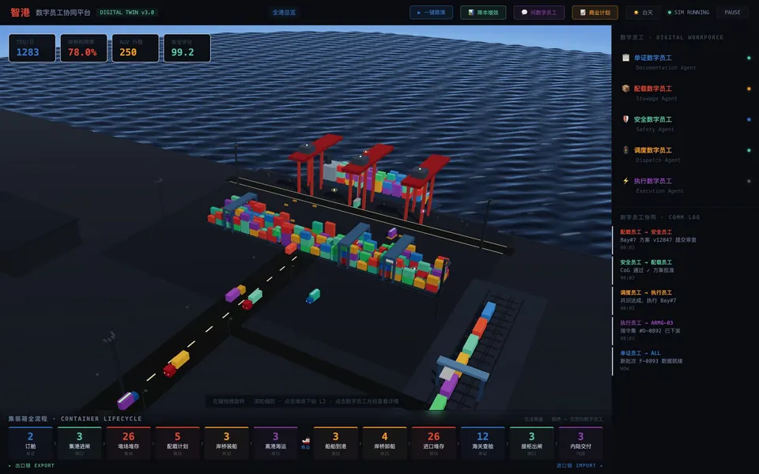
智港 · 数字员工协同平台
数字孪生 × 多智能体
港口作业的三维孪生之上运行五个智能体——单证、配载、安全、调度、执行——相互协商、逐级审批，接管集装箱从订舱到内陆交付的全流程。决策过程以协同日志呈现，可观察、可评估。
访问 ↗ smart-port-omega.vercel.app -
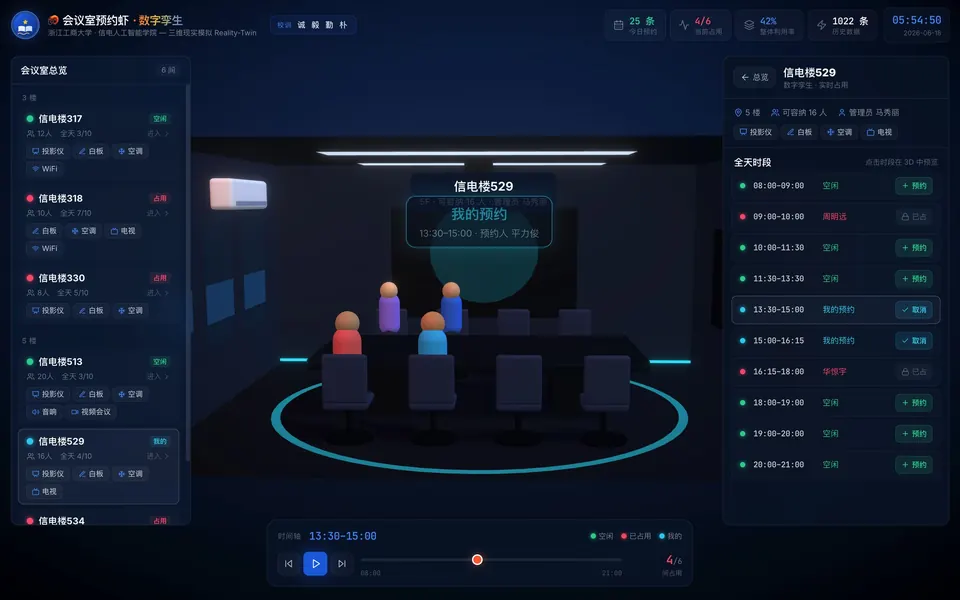
会议室预约虾 · 三维现实模拟
垂直智能体 × 空间孪生
信电楼 6 间会议室的空间孪生与预约智能体。三维场景、全天时段表与预约动作是同一状态的三种视图，联动更新；已沉淀千余条历史预约数据。同系列还包括智慧就业、图书馆管理与象棋指导智能体。
访问 ↗ zjgsu-y1k4.vercel.app -
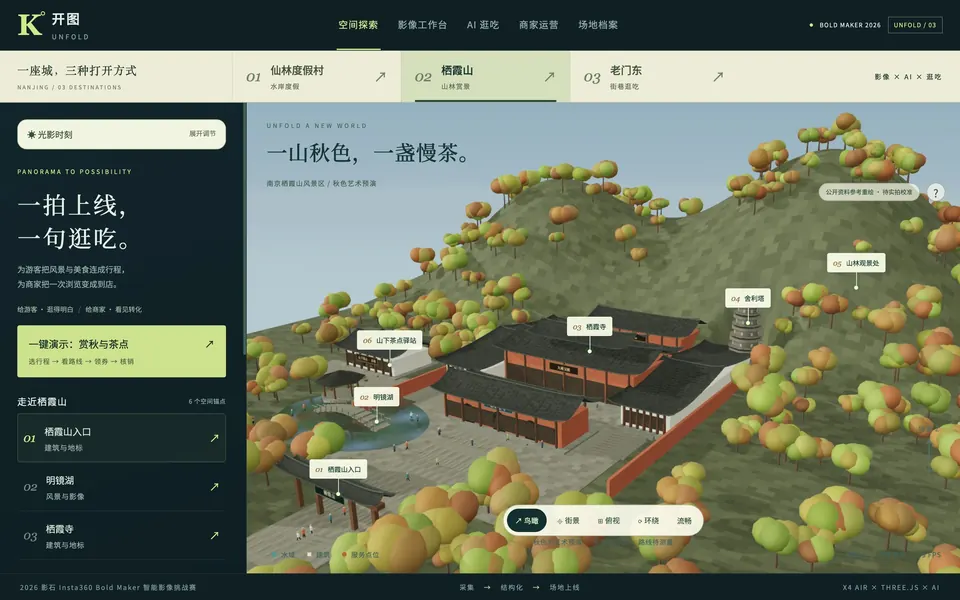
开图 Unfold · 3D 旅行一体化助手
全景影像 × 行程智能体
将实拍全景素材接成可漫游的三维场地，由行程智能体串联风景、美食、领券与核销，打通从一次浏览到一次到店的动线。2026 影石 Insta360 Bold Maker 智能影像挑战赛赛道一原型。
访问 ↗ 60.205.204.162/kaitu
数字孪生与空间交互Digital Twins
-
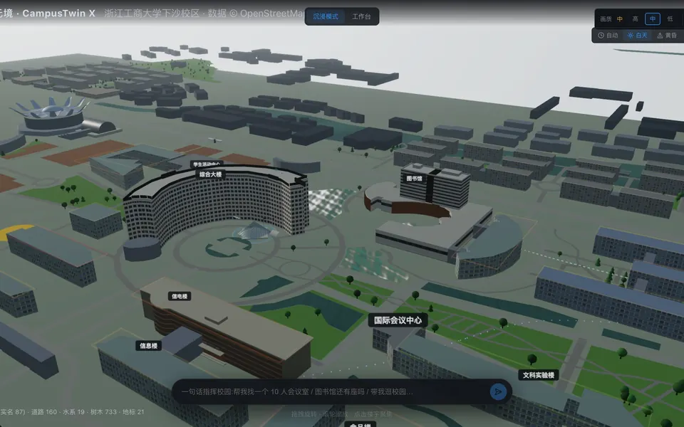
商大元境 · CampusTwin X
数字孪生 × 自然语言接口
基于 OpenStreetMap 真实地理数据重建浙江工商大学下沙校区：422 栋楼宇、160 条道路、733 棵树木与 21 处地标。以一句话指令操作空间——「帮我找一个 10 人会议室」——三维孪生在这里是自然语言与真实空间之间的接口。
访问 ↗ 121.43.80.231/campus -
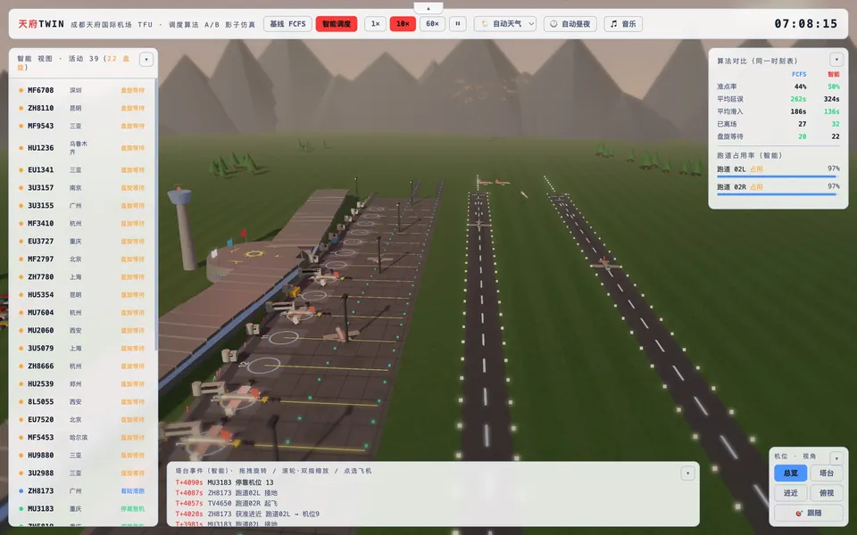
天府 TWIN · 调度算法 A/B 影子仿真
数字孪生 × 算法对照实验
成都天府国际机场运行孪生。基线 FCFS 与智能调度在同一时刻表下并行推演，逐项对比准点率、平均延误、平均滑入、离场架次、盘旋等待与跑道占用率——具备基线、对照、多指标与可复现输入的实验结构。
访问 ↗ aerotwin-tfu.vercel.app -
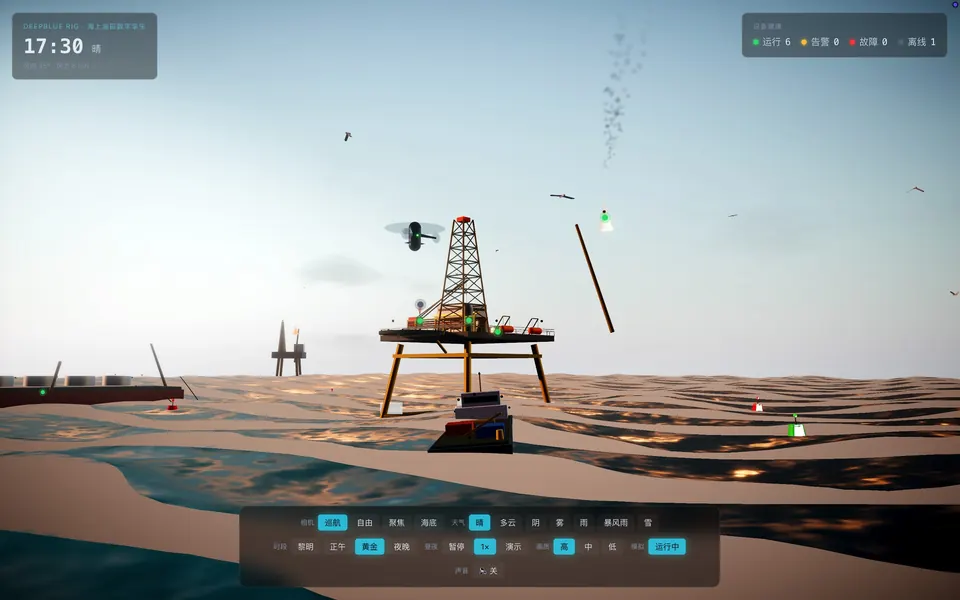
DEEPBLUE RIG · 海上油田数字孪生
数字孪生 × 设备监测
海上钻井平台的运行孪生：设备健康状态（运行 / 告警 / 故障 / 离线）实时汇总，可切换天气、时段与画质，用于高风险作业场景的态势呈现与演示推演。
访问 ↗ deepblue-rig.vercel.app
可信生成式 AITrustworthy GenAI
-
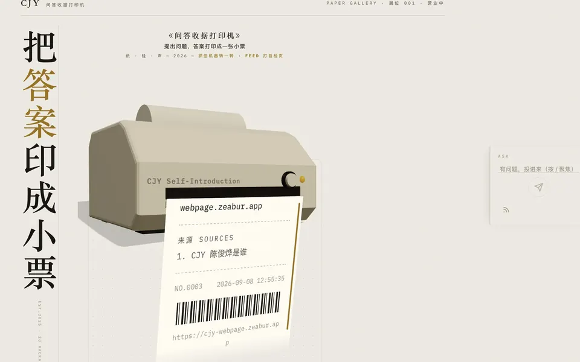
CJY 小票机 · 问答收据打印机
RAG × 可溯源输出
检索增强生成的可视化：每个回答被打印成一张带来源清单、流水号、时间戳与条形码的小票，使模型输出可以回指到证据。
访问 ↗ 60.205.204.162/cjy -
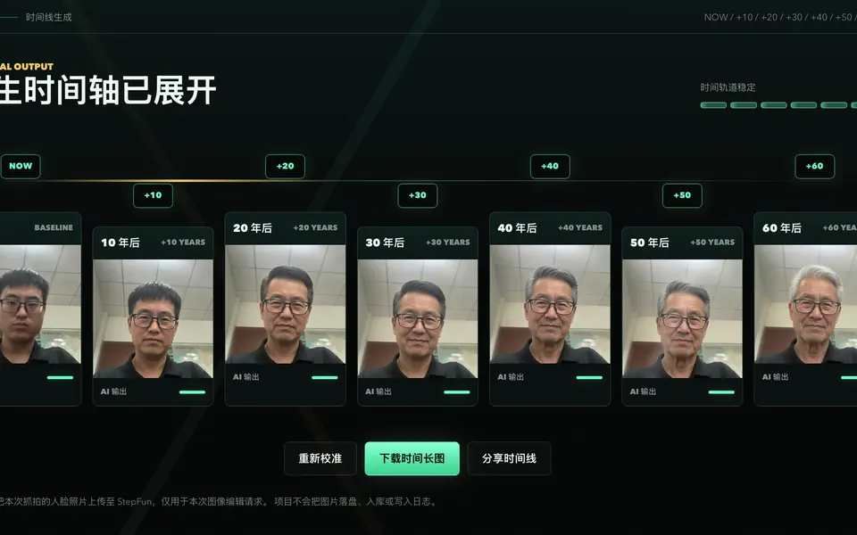
人生时光机 · Personal Time Capsule
生成式 AI × 隐私设计
一次生成从当下到 +60 年的七个时间切片。生成链路建立在明确的隐私边界上：云端同意门，人脸照片仅用于单次请求，不落盘、不入库、不写日志——把「同意」与「不留存」做成产品中可见的部分。
访问 ↗ time-machine-6iso.vercel.app
交互与教育Interaction & Education
-
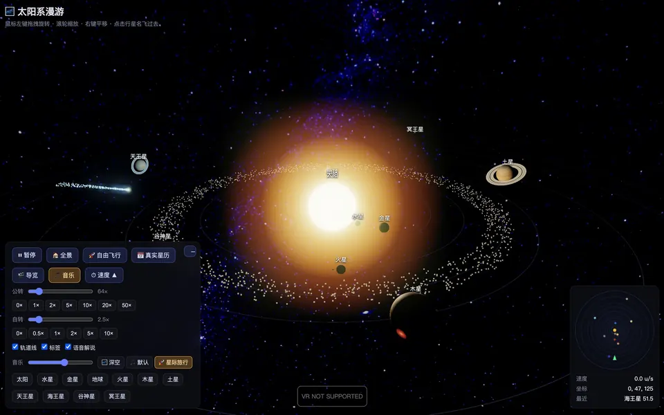
太阳系漫游
科普教学 · 数据驱动
由真实星历驱动的太阳系三维模拟，支持公转自转倍速、自由飞行与语音解说；作为 7–13 岁少儿 AI 课程的课堂教具实际使用。
访问 ↗ virtual-universe-eight.vercel.app -
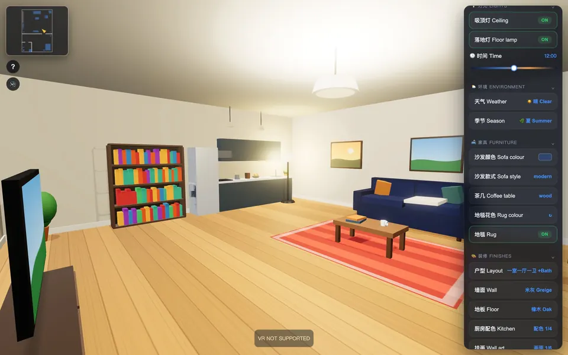
虚拟看房 · 样板间漫游
三维交互 · 参数化配置
可自由漫游的三维样板间，户型、墙面、地板、家具、灯光与天气实时可调；验证同一套三维能力从工业场景向消费场景的迁移。
访问 ↗ virtual-reality-mocha.vercel.app -
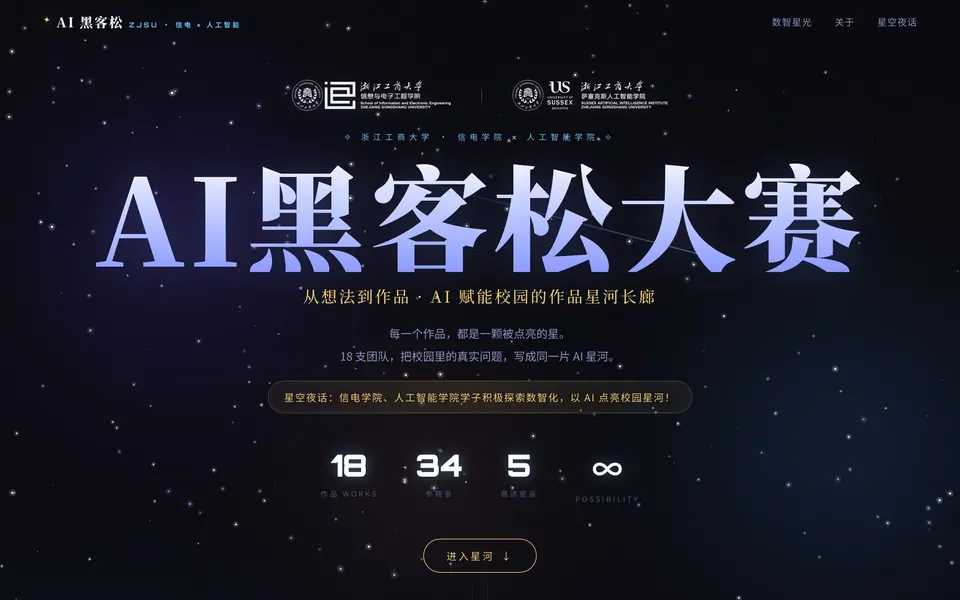
首届 AI 黑客松大赛作品展台
赛事平台 · 全栈
浙江工商大学信电学院 × 萨塞克斯人工智能学院首届 AI 黑客松的官方作品展台：18 件作品、34 名参赛者、5 条赛道。
访问 ↗ zjsu-ai-hackathon.vercel.app
03教育与经历Education & Experience
教育Education
-
在读
浙江工商大学 · 信电人工智能学院 · 硕士研究生方向：AI 赋能与智能体开发
-
本科
软件工程基础编程与大数据 · Web 前后端 · Java
研究与项目经历Research & Projects
-
现在
杭州医学研究所 · 智能体方向研究
-
校内
课程智能体矩阵 · 与诸葛斌导师将业务流程交给智能体承载的开发范式：会议室预约、智慧就业、图书馆管理、象棋指导
-
校内
「未来课堂」智能体 · 开发者面向未来课堂的 AI 教学智能体
-
校内
研究生院督导管理系统 · 开发者研究生院教学督导管理系统的开发
-
校内
信电智慧学院平台 · 开发贡献者
04教学Teaching
-
2026.04 – 09
少儿 AI 课程 · 良渚面向 7–13 岁：AI 游戏、AI 编程、AI 建模与 3D 打印
-
2026.05 – 06
研究生 AI 助教 · 浙江工商大学
-
2026.04
HR 智能体搭建培训 · 浙江医药股份有限公司
-
2026.03
AI 智能体应用培训 · 浙江省青年创业协会
05荣誉与服务Honors & Service
荣誉奖项Honors & Awards
- 2026.08三等奖（指导团队）· 杭州 AGENT BUILDER HACKATHON
- 2026.07微光共振奖（指导团队）· 深圳微光青少年黑客松67 支团队中 10 个奖项之一
- 2026.05银奖 · 南京 Flux 南客松 S2「Life's Short, Play More」赛道
- 2026.03一等奖 · GDPS Astron 产业智变黑客松
- 2026.03二等奖 · 商汤 SenseAudio & AudioClaw 多场景 Skills 创新赛
- 2026.03最佳人气奖 · 上海徐汇 Agent 进化酒馆黑客松
- 2026.01最佳技术奖 · 百度千帆 Agent 训练营
- 2026.01一等奖 · 浙江工商大学信电学院 · 人工智能学院 AI 应用创新大赛
学术与社区服务Service
- 2026.08主办方 · 落地执行 · 上海松江「星火计划」OPC 创业挑战赛
- 2026.08评委 · MoonStone 黑客松
- 2026.07指引者 / 评委 · 杭州 AdventureX 2026
- 2026.07外场负责人 · 上海首场 AI 生命领养市集
- 2026.03协办方 · 中国高校联盟 AI Hackathon Tour（浙江大学站 · 西安交通大学站）
- 2026.02主办方负责人 · 全国 10 城联动汤泉黑客松 · 太原站
2025.11 – 2026.08，累计参与 25 场 AI 赛事与活动，先后担任参赛者、志愿者、工作人员、协办方、主办负责人、外场负责人、带队教练与评委。
06联系Contact
- 微信
- com_cjy_util
- 所在地
- 杭州 · Hangzhou, CN